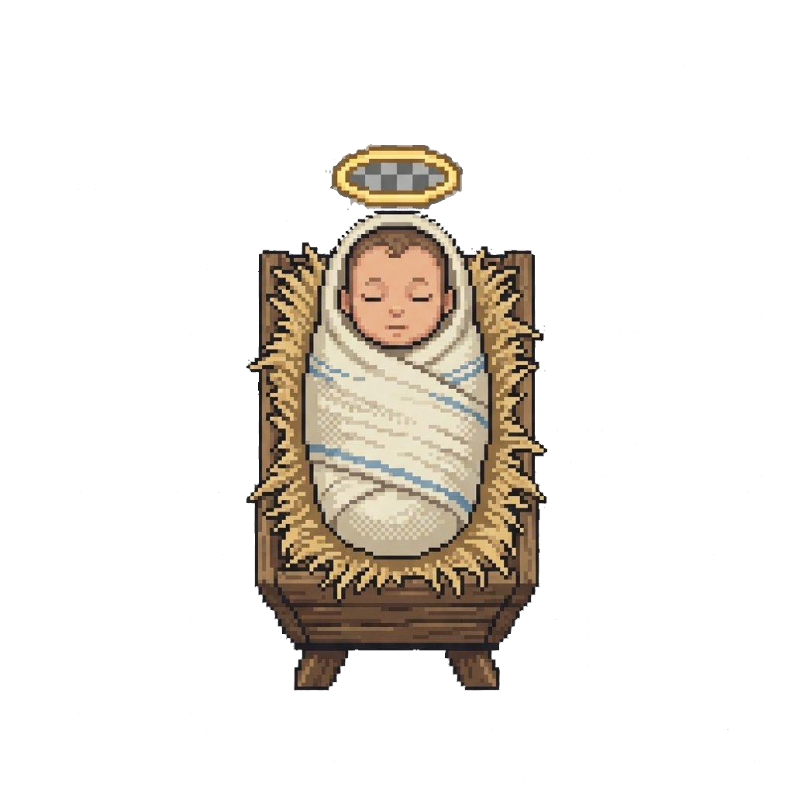
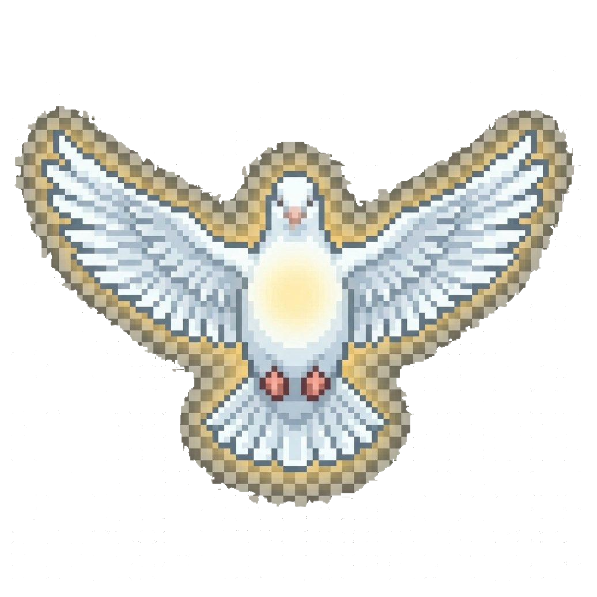

Playing As
Mary
Stage 1 of 10
Score
0
Narrator
Click or press Space to continue
✦ Knowledge Check ✦
First correct: 20 pts
✦ ✦ ✦
HRE2O · Grade 10 Catholic Religion
The Life
of Jesus
of Jesus
An Educational Journey Through the Gospels
Follow the life of Jesus through 10 key events — from the Annunciation to the Healing Ministry. Read carefully, answer questions correctly, and earn the highest score you can.
Journey Complete
You have walked in the footsteps of faith
0
Points Earned